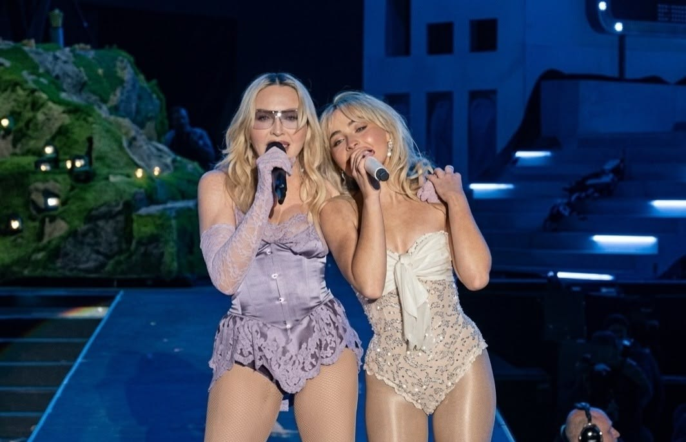

A colaboração entre Madonna e Sabrina Carpenter na faixa "Bring Your Love" marcou um dos momentos mais icônicos do pop em 2026. Lançada oficialmente em 30 de abril,
a música serviu como o grande anúncio de que a Rainha do Pop estava retornando às suas raízes eletrônicas com o álbum "Confessions on a Dance Floor, Part II", dando
continuidade ao clássico de 2005.
O mundo teve o primeiro vislumbre dessa parceria durante o festival Coachella 2026. Em um show histórico, Sabrina Carpenter surpreendeu o público ao convidar Madonna
para subir ao palco. Juntas, elas não apenas apresentaram a nova faixa, mas também performaram clássicos como "Vogue" e "Like a Prayer", simbolizando uma espécie de
"passagem de bastão" ou coroação da nova geração.
Musicalmente, "Bring Your Love" é um hino de House e Disco, trazendo de volta o produtor Stuart Price para garantir aquela sonoridade polida e dançante que define a
era Confessions. A letra explora temas de liberdade e celebração, misturando a experiência vocal madura de Madonna com o frescor e o estilo chic de Sabrina. O single
já está disponível em todas as plataformas de streaming e o videoclipe oficial é aguardado com grande expectativa pelos fãs.